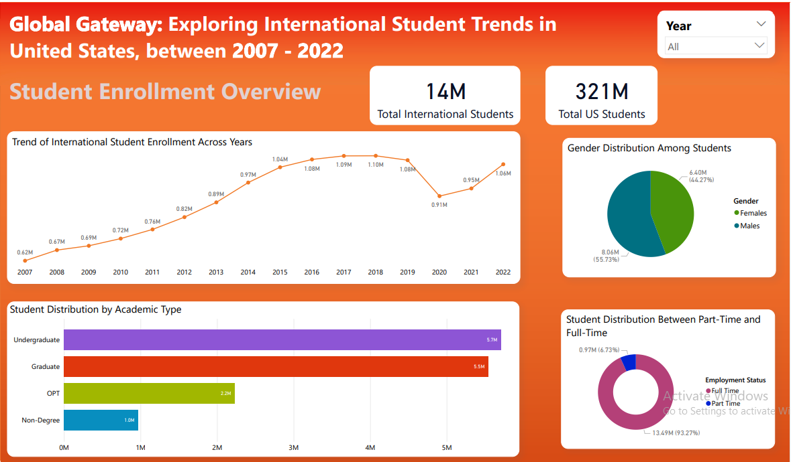

International Student Demographics in US
Project Overview
The International Student Demographics Power BI project provides a detailed analysis of international student enrollment across US universities from 2007 to 2022. This interactive dashboard offers insights into student demographics, academic fields, financial support, and enrollment trends, helping educators, policymakers, and institutions understand key patterns in international student enrollment.
Key Insights
Student Enrollment Overview üìà- Year-wise enrollment trends (2007-2022).
- Academic details such as program types and degree levels.
- Funding distribution across different student groups.
- Visualizations: Bar charts, line charts, and treemaps.
- Breakdown of majors and fields of study chosen by international students.
- Distribution of academic types across different universities.
- Visualizations: Pie charts, donut charts for academic categories.
- Gender distribution across different fields and levels.
- Insights into visa types, marital status, and student status.
- Year-wise demographic trends to analyze shifts over time.
- Visualizations: Bar charts, pie charts, line charts.
- Examination of funding sources (scholarships, self-funding, sponsorships).
- Financial trends across different years and student demographics.
- Visualizations: Pie charts, bar charts for financial trends.
Technical Implementation
Power BI Implementation- Relationships & Data Modeling:
- Established relationships between tables to enable seamless analysis.
- Used star schema for optimal Power BI performance.
- DAX (Data Analysis Expressions):
- Created calculated columns & measures to extract deeper insights.
- Examples: Total Student Enrollment, Growth Rate %, Funding Distribution %.
- Interactive Slicers & Filters:
- Users can dynamically filter data based on years, student types, and funding sources.
- Facilitates customized insights based on user preferences.
- Bar Charts: Compare enrollment trends, funding distribution.
- Pie Charts: Show student demographics, visa types, funding breakdowns.
- Donut Charts: Highlight academic fields and gender distribution.
- Line Charts: Display yearly trends in enrollment and funding.
- Tree Map: Visualizes student distribution by country and region.
- World Map: Illustrates geographic trends of student origins.
Key Learnings
- Understanding enrollment trends helps universities optimize recruitment strategies.
- Financial insights reveal which funding sources are most crucial for international students.
- Demographic analysis assists in shaping inclusive policies and support services.
- Field of study trends provide institutions with curriculum planning insights.
- Dynamic Power BI dashboards allow stakeholders to explore data interactively.